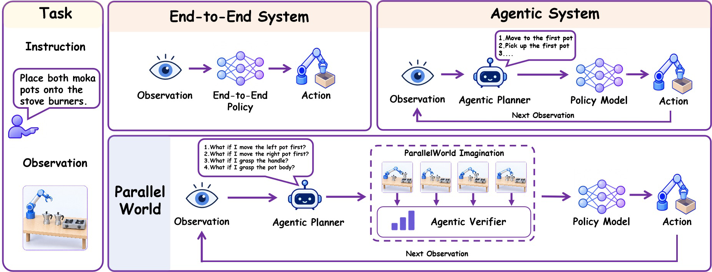
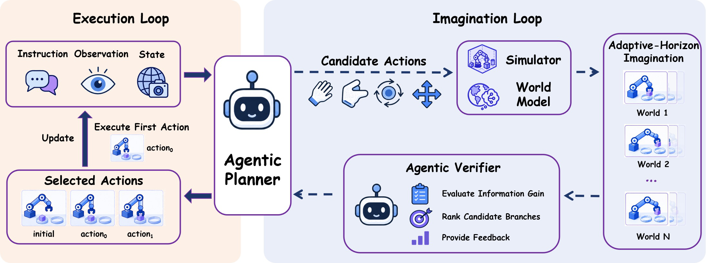
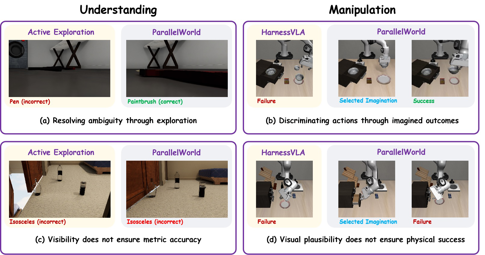

Imagine
Propose alternative primitive actions and roll out their prospective observations across multiple steps.
Imagine · Verify · Act
Test-Time Scaling for
Agentic Embodied Reasoning
1 Tsinghua University2 National University of Singapore
* Equal contribution † Project Leader
Explore alternative futures before acting.
Prospective world imagination for understanding and manipulation.
An agent should consider how its actions shape future observations and task progress before committing to them.
Embodied AI has emerged as a key paradigm for autonomous systems operating in complex physical environments. While end-to-end models have established strong local capabilities for perception and control, scaling these capabilities to extended, multi-stage tasks remains difficult. Agentic embodied systems address this challenge by introducing high-level planners that organize perception, reasoning, and executable skills over longer interaction horizons. However, existing agentic embodied frameworks typically generate actions for direct execution without explicitly simulating how alternative action sequences shape future observations and task progress, leading agents to commit to suboptimal interactions before considering their long-term consequences.
To address this limitation, we propose ParallelWorld, an adaptive-horizon test-time scaling framework that grounds agentic embodied reasoning in the prospective simulation of action outcomes. Specifically, we design an agent system to simulate and evaluate alternative trajectories in parallel before committing to an action. A verifier assesses intermediate state transitions with respect to the task objective, dynamically pruning unpromising branches and guiding subsequent expansion. Based on the evaluated long-horizon outcomes, the agent selects a trajectory, executes only its first action, and replans as new observations become available.
Experiments on ESI-Bench and LIBERO-Pro demonstrate improvements in active spatial reasoning and language-conditioned manipulation, respectively, highlighting the effectiveness of prospective planning for both understanding and manipulation tasks.

An adaptive imagination loop meets a closed-loop interaction process.

Propose alternative primitive actions and roll out their prospective observations across multiple steps.
Evaluate outcomes against the task objective, prune unpromising branches, and guide further expansion.
Execute only the first action of the selected trajectory. Observe the resulting state and begin a new search.
Simulator-based imagination restores candidate states to explore views and interactions that reveal task-relevant evidence.
Image-based world imagination predicts the visual outcomes of executable primitives to compare progress toward the goal.
Evaluated on active spatial reasoning and language-conditioned manipulation under perturbations.
ESI-Bench · 57.89% → 77.89%
ESI-Bench · 70.95% → 89.86%
LIBERO-Pro · 56.0% → 83.0%
Percentage-point gains over Active Exploration on ESI-Bench and HarnessVLA on LIBERO-Pro.
ParallelWorld improves over Active Exploration on 26 of 28 evaluated subcategories. Liquid Volume is excluded due to a simulator issue with pouring actions.
| Subcategory | Passive | Active | ParallelWorld |
|---|---|---|---|
| View Hallucination | 53.32 | 66.82 | 71.40 |
| Partial Occlusion | 36.84 | 57.89 | 77.89 |
| Material Transparency | 69.72 | 71.10 | 73.85 |
| Rigid Containment | 55.00 | 60.00 | 50.00 |
| Deformable Objects | 37.76 | 40.82 | 42.86 |
| Inclined Plane | 59.02 | 83.61 | 85.25 |
| Stacking & Stability | 1.12 | 45.98 | 53.95 |
| Reflection Authoring | 56.57 | 51.52 | 60.61 |
| Specular Reflection: Spatial Relations | 38.94 | 36.28 | 51.33 |
| Correspondence | 42.05 | 47.73 | 48.86 |
| Linear Alignment | 52.13 | 68.09 | 70.21 |
| Geometric Configuration | 16.55 | 17.96 | 16.90 |
| Physical Contact | 66.39 | 68.07 | 73.95 |
| Dimensional Size | 39.52 | 44.91 | 49.10 |
| Spatial Distance | 61.18 | 58.55 | 67.11 |
| Connectivity | 66.67 | 55.00 | 60.00 |
| Traversable Passage | 68.33 | 65.00 | 75.00 |
| Regional Boundary | 45.00 | 57.50 | 63.75 |
| Long-Term Navigation | 16.67 | 16.67 | 18.33 |
| Counting with Occlusion | 23.33 | 26.67 | 30.00 |
| Spatial Segmentation | 20.00 | 20.00 | 23.33 |
| Merged Observation | 0.00 | 1.67 | 6.67 |
| Category Ambiguity | 0.00 | 8.33 | 13.33 |
| Structural Enclosure | 2.50 | 5.00 | 7.50 |
| Illumination Variability | 0.00 | 6.00 | 10.00 |
| Unobserved Change | 38.62 | 70.95 | 89.86 |
| Agent Observation | 34.59 | 48.87 | 62.41 |
| Action Order Inference | 37.66 | 53.25 | 61.04 |
Accuracy (%), from Table 1 of the paper. All active methods use the same answer model. Bold marks the best result in each row.
ParallelWorld improves over HarnessVLA in all eight settings. Each setting contains 100 episodes: 10 tasks × 10 seeds, for 800 episodes in total.
| Method | Spatial | Object | Goal | LIBERO-10 | ||||
|---|---|---|---|---|---|---|---|---|
| T | S | T | S | T | S | T | S | |
| OpenVLA | 0.0 | 0.0 | 0.0 | 0.0 | 0.0 | 0.0 | 0.0 | 0.0 |
| π0 | 0.0 | 0.0 | 0.0 | 2.0 | 0.0 | 0.0 | 0.0 | 0.0 |
| π0.5 | 1.0 | 20.0 | 1.0 | 17.0 | 2.0 | 38.0 | 1.0 | 8.0 |
| MolmoAct | 0.0 | 0.0 | 0.0 | 6.0 | 0.0 | 0.0 | 6.0 | 0.0 |
| NORA | 0.0 | 0.0 | 0.0 | 0.0 | 0.0 | 0.0 | 0.0 | 0.0 |
| X-VLA | 0.0 | 0.0 | 8.0 | 2.0 | 9.0 | 1.0 | 10.0 | 0.0 |
| AtomVLA | 1.0 | 16.0 | 0.0 | 10.0 | 11.0 | 2.0 | 9.0 | 1.0 |
| HarnessVLA | 79.0 | 56.0 | 79.0 | 85.0 | 62.0 | 57.0 | 42.0 | 29.0 |
| ParallelWorld (Ours) | 88.0 | 83.0 | 94.0 | 88.0 | 65.0 | 66.0 | 50.0 | 30.0 |
Success rate (%), from Table 2. T: instruction-redirection. S: position-swap. HarnessVLA is reproduced with Codex as the planner; frozen VLA results are taken from the HarnessVLA paper.
Prospective evaluation helps select informative views and favorable manipulation outcomes. Precise geometry and contact dynamics remain challenging.

Adaptive search width allocates more candidates when alternatives are ambiguous and reduces redundant exploration when the next step is clear.
| Method | Success rate (%) ↑ | Total time (s) ↓ |
|---|---|---|
| Direct Execution | 23.3 | 417.4 |
| Fixed Search Width (K = 2) | 10.0 | 2930.0 |
| Fixed Search Width (K = 4) | 36.7 | 4889.5 |
| Adaptive Search Width (Ours) | 73.3 | 2402.2 |
Table 3 of the paper. Total time is the average per episode. Adaptive search outperforms the tested fixed widths, while adding computation relative to direct execution.
@misc{chen2026parallelworld,
title = {ParallelWorld: Test-Time Scaling for Agentic Embodied Reasoning},
author = {Min Chen and Shengjun Zhang and Yuxin Li and Zhang Zhang
and Xin Fei and Chong Xia and Yueqi Duan},
year = {2026},
eprint = {2608.22971},
archivePrefix = {arXiv},
primaryClass = {cs.AI},
url = {https://arxiv.org/abs/2608.22971}
}